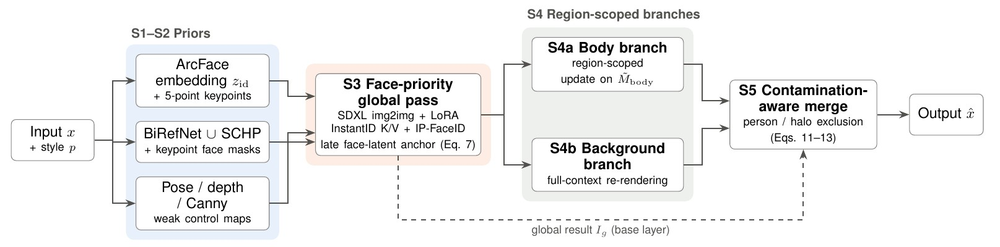
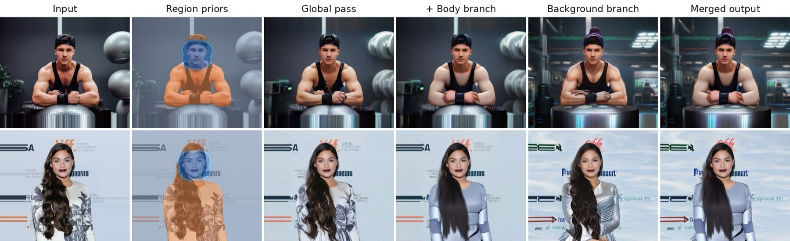
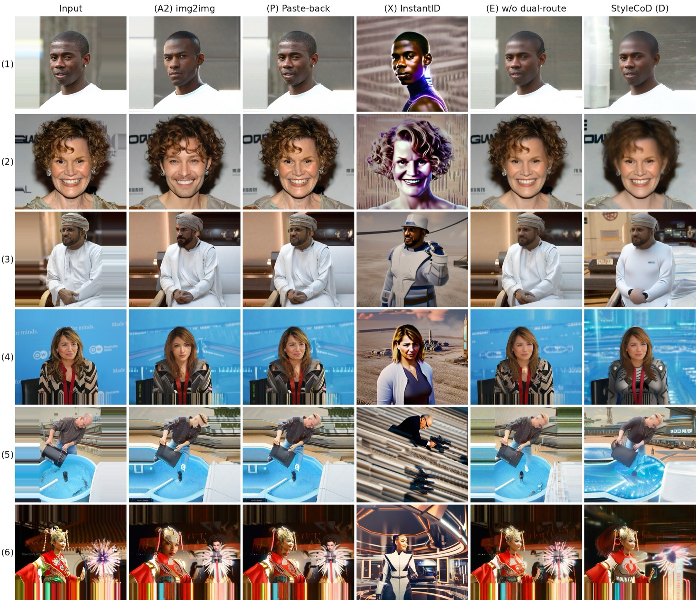

Project · Controllable generation
StyleCoD: Region-Decoupled Style Re-rendering of Portraits with Face-Priority Identity
How do you restyle a real portrait strongly, so that clothing and scene really change, while the person stays recognizable and the pose and layout stay put? StyleCoD gives each of these goals its own region and its own stage in a training-free SDXL pipeline.
Problem
Stacking components that each work in isolation, such as an identity adapter, pose/depth/edge ControlNets, and a style LoRA, does not reliably work in one image-to-image pass. We observed three conflicts:
Strong style guidance overwrites facial detail. Strong identity conditioning suppresses the requested change.
Pose, depth, and edge maps keep the layout but also pin clothing and background to the source, so the result is only re-textured.
When regions are generated separately, they leak into each other at recombination. For example, a background pass can bleed into the face.
Method
Instead of tuning one weighted sum of constraints, StyleCoD separates them in space (which region) and time (which denoising steps). Nothing is trained or fine-tuned.

Late-stage face-latent anchor (the key mechanism)
For the first steps the face is free to change lighting and texture. During the last 11 of 18 executed steps, the latent is pulled back toward the source latent inside a feathered face box, with a strength that ramps up linearly.
Region-scoped branches and write permissions
The body branch updates only the non-facial person mask. The background branch re-renders the full image with global context, so new structures have consistent lighting and perspective. Its output is then admitted only outside the person and the face halo:

Benchmark
The method was tuned on six development photos, so it is evaluated on a separate, license-documented benchmark: 120 single-person photographs from the Open Images test split (CC BY 2.0). Images are stratified by face size into 40 small (<2% of the canvas), 40 medium, and 40 large (≥6%), half Man and half Woman. All selection rules were fixed before any model was run.
Comparisons are paired, with 95% bootstrap confidence intervals and Wilcoxon tests. They include controlled ablations and three references: plain img2img, pasting the source face back (with partial blends), and the official InstantID pipeline. Key conclusions were re-run with three seeds.
Results
| Method (120 images) | ID ↑ | Face-SSIM | BG-SSIM | ΔCLIP-T ↑ | Face-ΔCLIP-T ↑ |
|---|---|---|---|---|---|
| A2 · SDXL img2img | 0.059 | 0.507 | 0.726 | 0.062 | 0.057 |
| C · Coupled stack | 0.110 | 0.564 | 0.760 | 0.042 | 0.043 |
| G · C + anchor | 0.520 | 0.734 | 0.764 | 0.032 | 0.021 |
| E · without region branches | 0.527 | 0.735 | 0.764 | 0.032 | 0.021 |
| D · StyleCoD | 0.529 | 0.734 | 0.686 | 0.054 | 0.025 |
| P · Paste-back on A2 | 0.950 | 0.917 | 0.735 | 0.035 | 0.001 |
| X · InstantID (official) | 0.580 | 0.327 | 0.443 | 0.088 | 0.056 |
- The anchor accounts for the identity gain. Adding only the anchor (C → G) raises identity by +0.409 (95% CI [0.367, 0.451]), higher on 113 of 120 images.
- The region branches add style at a cost. D vs. E gives +0.023 whole-image style gain (reproduced under three seeds) but −0.078 background SSIM, because the background is re-rendered rather than inherited.
- Face size dominates. Identity is 0.726 / 0.593 / 0.269 for large / medium / small faces (Spearman ρ = 0.81 with face area). The same ordering holds for InstantID.

Trade-off: identity vs. face stylization
The plot below gives the clearest summary. Blending the source face into the img2img result at increasing weight traces a curve. StyleCoD lies on that curve, between the 50% and 75% blends, rather than above it. Where it differs is how the face is produced (generated with the scene rather than composited) and how much of the scene is re-rendered. InstantID sits above the curve, but only because it regenerates the whole scene.
Limitations
- One style (one LoRA and one prompt set), one backbone, and single-person photographs only.
- The identity metric uses the same ArcFace family that produces the conditioning embedding. An independent recognizer and a human study would strengthen the conclusions.
- With these automatic metrics, StyleCoD does not beat a 50–75% paste-back blend on the identity–face-stylization balance. Whether it looks more natural is a perceptual question that a blind user study should answer.
- Small faces remain hard (ID 0.27). Border streaks come from edge-replicated canvas padding.
My role
First author. I conceived the region-and-stage decoupling, implemented the pipeline, designed the benchmark protocol and statistics, ran the experiments, made the figures, and wrote the paper.